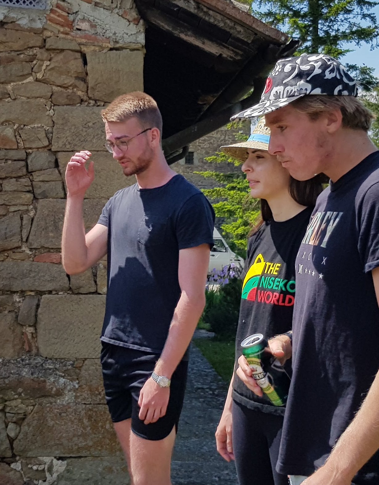

Hello! I am a researcher at Boston University interested in the application of tools from theoretical and computational statistical physics to study complex systems. My reaserch thus far has been somewhat eclectic, focusing on quantum and classical many-body chaos, machine learning and immunology.
I am currently working on projects in therotical immunology and counterdiabatic methods for quantum computing. I am also trying to learn new languages and improve my salsa dancing technique. Recently, I have started to dabble in economics, computational lingistics, DFT and graphic design. Hopefully something non-trivial will come out of it... I also like to lift weights (Link will be attached later).
In my strange and chaotic walk through life I have had the honor of knowing some absolutly brilliant individuals: Here are the ones that have websites (unordered list): Anatoli Polkovnikov , Pankaj Mehta , Duncan Haldane , Dries Sels , Marin Bukov, Phil Weinberg